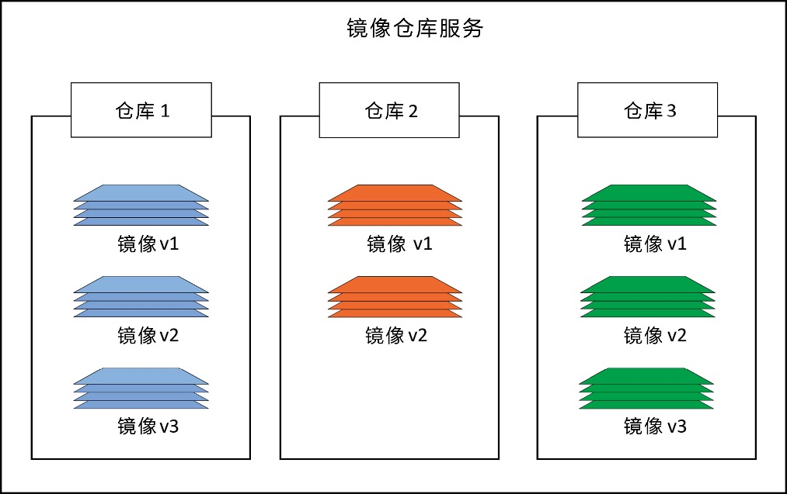
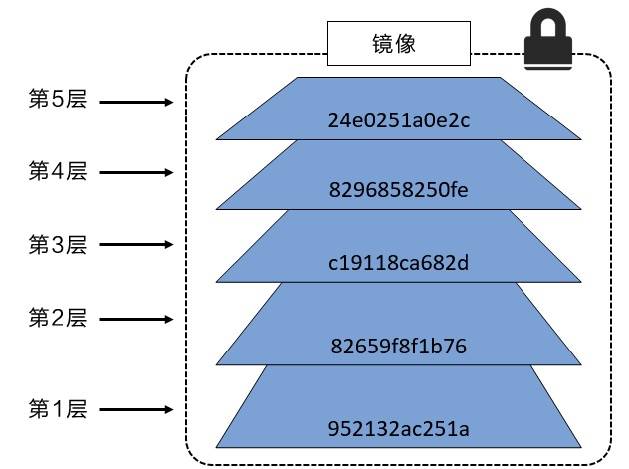
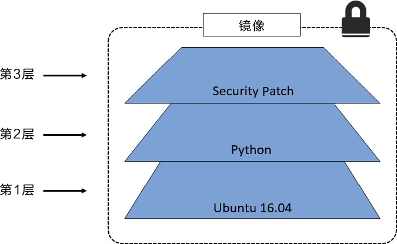
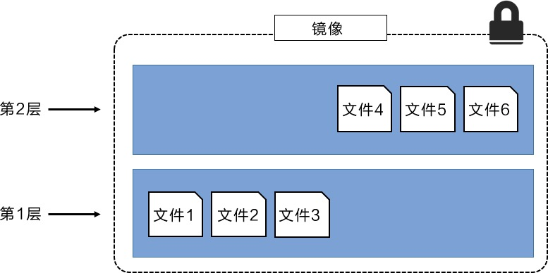
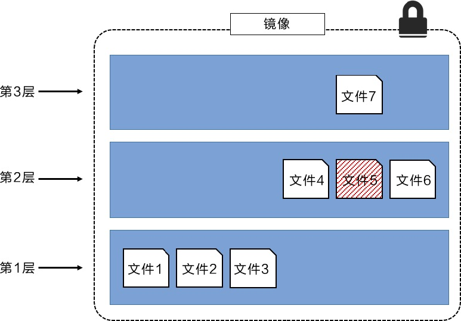
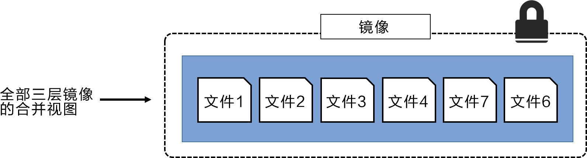
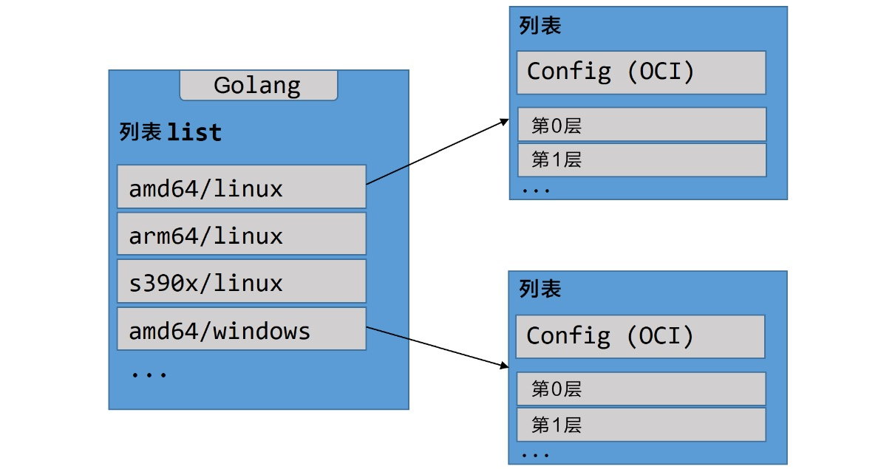

Docker
0. 常用命令
| 命令 | 用途 |
|---|---|
| docker pull | 获取 image |
| docker build | 创建 image |
| docker images | 列出 image |
| docker run | 运行 container |
| docker ps | 列出正在运行的 container |
| docker rm | 删除 container |
| docker rmi | 删除 image |
| docker cp | 在 host 和 container 之间拷贝文件 |
| docker commit | 保存改动为新的 image |
Dockerfile 语法
| 命令 | 用途 |
|---|---|
| FROM | base image |
| RUN | 执行命令 |
| ADD | 添加文件 |
| COPY | 拷贝文件 |
| CMD | 执行命令 |
| EXPOSE | 暴露端口 |
| WORKDIR | 指定路径 |
| MAINTAINER | 维护者 |
| ENV | 设定环境变量 |
| ENTRYPOINT | 容器入口 |
| USER | 制定用户 |
| VOLUME | mount point |
1. 安装与技术概览
1.1 简介
当有人提到“Docker”时，可能是指如下 3 种概念之一：
Docker 公司
Docker 的容器运行时和编排引擎
Docker 开源项目（Moby）
Docker 是一种运行于 Linux 和 Windows 上的软件，用于创建、管理和编排容器。Docker 是在 GitHub 上开发的 Moby 开源项目的一部分。Docker 公司，位于旧金山，是整个 Moby 开源项目的维护者。Docker 公司还提供包含支持服务的商业版本的 Docker。
“Docker” 一词来自英国口语，意为码头工人（Dock Worker），即从船上装卸货物的人。
多数技术人员在谈到 Docker 时，主要是指 Docker 引擎。Docker 引擎是用于运行和编排容器的基础设施工具，是运行容器的核心容器运行时。
Docker 引擎主要有两个版本：企业版（EE）和社区版（CE）。每个季度，企业版和社区版都会发布一个稳定版本。社区版本会提供 4 个月的支持，而企业版本会提供 12 个月的支持。
Moby 项目的目标是基于开源的方式，发展成为 Docker 上游，并将 Docker 拆分为更多的模块化组件。Moby 项目托管于 GitHub 的 Moby 代码库，包括子项目和工具列表。核心的 Docker 引擎项目位于 GitHub 的 moby/moby，但是引擎中的代码正持续被拆分和模块化。
开放容器计划（The Open Container Initiative, OCI），OCI 已经发布了两份规范（标准）：镜像规范和运行时规范。
1.2 安装
wget -qO- https://get.docker.com/ | sh
sudo usermod -aG docker dafa # 将用户名添加到Docker组
cat /etc/group | grep docker # 检查是否添加成功
docker --version
docker system info
1.3 Docker 存储驱动的选择
每个 Docker 容器都有一个本地存储空间，用于保存层叠的镜像层（Image Layer）以及挂载的容器文件系统。默认情况下，容器的所有读写操作都发生在其镜像层上或挂载的文件系统中，所以存储是每个容器的性能和稳定性不可或缺的一个环节。
在 Linux 上，Docker 可选择的一些存储驱动包括 AUFS（最原始也是最老的）、Overlay2（可能是未来的最佳选择）、Device Mapper、Btrfs 和 ZFS。Docker 在 Windows 操作系统上只支持一种存储驱动，即 Windows Filter 。
存储驱动的选择是节点级别的。这意味着每个 Docker 主机只能选择一种存储驱动，而不能为每个容器选择不同的存储驱动。在 Linux 上，大家可以通过修改 /etc/docker/daemon.json 文件来修改存储引擎配置，修改完成之后需要重启 Docker 才能够生效。
如果修改了正在运行 Docker 主机的存储引擎类型，则现有的镜像和容器在重启之后将不可用，这是因为每种存储驱动在主机上存储镜像层的位置是不同的（通常在/var/lib/docker/ /...目录下）。修改了存储驱动的类型，Docker 就无法找到原有的镜像和容器了。切换到原来的存储驱动，之前的镜像和容器就可以继续使用了。如果希望在切换存储引擎之后还能够继续使用之前的镜像和容器，需要将镜像保存为 Docker 格式，上传到某个镜像仓库，修改本地 Docker 存储引擎并重启，之后从镜像仓库将镜像拉取到本地，最后重启容器。
docker info 命令即可查看存储引擎信息。选择存储驱动并正确地配置在 Docker 环境中是一件重要的事情，特别是在生产环境中。参考指南：
Red Hat Enterprise Linux：4.x 版本内核或更高版本 + Docker 17.06 版本或更高版本，建议使用 Overlay2。
Red Hat Enterprise Linux：低版本内核或低版本的 Docker，建议使用 Device Mapper。
Ubuntu Linux：4.x 版本内核或更高版本，建议使用 Overlay2。
Ubuntu Linux：更早的版本建议使用 AUFS。
SUSE Linux Enterprise Server：Btrfs。
1.4 纵观 Docker
1.4.1 运维
在运维视角中，主要包括下载镜像、运行新的容器、登录新容器、在容器内运行命令，以及销毁容器。
安装 Docker 的时候，会涉及两个主要组件：Docker 客户端和 Docker daemon（有时也被称为“服务端”或者“引擎”）。Docker daemon 实现了 Docker 引擎的 API。使用 Linux 默认安装时，客户端与 daemon 之间的通信是通过本地 IPC/UNIX Socket 完成的（ /var/run/docker.sock 文件，该文件不可读）。
对于 Docker 的镜像仓库来说，国内访问速度较慢，我们添加一个阿里云提供的 Docker 镜像加速器。
首先，我们需要编辑 /etc/docker/daemon.json 文件：
sudo vim /etc/docker/daemon.json
然后加入如下内容：
{
"registry-mirrors": ["https://n6syp70m.mirror.aliyuncs.com"]
}
修改之后，需要重启 docker 服务，让修改生效。使用如下命令：
sudo service docker restart
将 Docker 镜像理解为一个包含了 OS 文件系统和应用的对象会很有帮助。在 Docker 世界中，镜像实际上等价于未运行的容器,可以将镜像比作类（Class）。
在开发视角中，更多关注与应用相关的内容。本课程会从 GitHub 拉取一些应用代码，解释其中的 Dockerfile，将应用容器化，并在容器中运行它们。在 Docker 主机上获取镜像的操作被称为拉取。如果拉取了如 nginx 或者 microsoft/iis 这样的应用容器，则会得到一个包含操作系统的镜像，并且在镜像中还包括了运行 Nginx 或 IIS 所需的代码。重要的是，Docker 的每个镜像都有自己的唯一 ID。用户可以通过引用镜像的 ID 或名称来使用镜像。如果用户选择使用镜像 ID，通常只需要输入 ID 开头的几个字符即可——因为 ID 是唯一的，Docker 知道用户想引用的具体镜像是哪个。
# 从镜像启动容器
# docker container run 告诉 Docker daemon 启动新的容器
# -it 开启容器的交互模式，将当前的 shell 连接到容器终端
# ubuntu:18.4 基于该名称的镜像启动容器
# /bin/bash 在容器内部运行 bash 进程，即 Bash Shell
docker container run -it ubuntu:18.04 /bin/bash
# 查看当前容器内正在运行的全部进程
ps -ef
# 查看系统内部全部处于运行状态的容器，加上 -a 可以查看全部容器
docker container ls -a
# 退出容器
exit
启动容器后，按下快捷键 Ctrl + PQ 即可退出容器回到系统环境并保持容器处于运行状态。但容器并未关闭，仍处于运行状态。
# 将 Shell 连接到一个运行中的容器终端
docker container exec -it ubuntu:18.04 bash
# 停止容器
docker container stop ubuntu:18.04
# 杀死容器
docker container rm ubuntu:18.04
1.4.2 开发
通过 docker container commint 创建镜像示例（不易维护）
# 1 拉取镜像
docker image pull ubuntu:18.04
# 2 使用镜像创建并运行容器
docker container run --name shiyanlou01 -it ubuntu:18.04 bash
# 3 在容器中创建两个空文件 test1 test2
cd
touch test1 test2
exit
# 4 基于容器创建新镜像, dafa 是容器名， ubuntu 是镜像名，18.04.test 是版本
docker container commit dafa ubuntu:18.04.test
应用容器化，使用 Dockerfile 创建和修改镜像
1） 创建测试目录 test1 及其目录下的 Dockerfile
mkdir test1
cd test1
touch Dockerfile
2） 在 Dockerfile 中写入以下信息
# 指定基础镜像
FROM ubuntu:14.04
# 维护者信息
MAINTAINER dafa
# 镜像操作命令
RUN \
apt-get -yqq update && \
apt-get install -yqq apache2
# 容器启动命令
CMD ["/usr/sbin/apache2ctl", "-D", "FOREGROUND"]
3） 执行命令 docker image build -t dafa:1.0 test1 或 docker build -t dafa:1.0 test1，-t 选项后面是新镜像名和标签，最后一个参数 test1 是 Dockerfile 所在目录的相对目录。创建完成新的镜像后，可以执行 docker image ls 命令查看，然后执行如下所示命令启动容器：
docker container run -d -p 8000:80 --name dafa01 dafa:1.0
上图所示命令使用 -p 选项将本机的 8000 端口映射到容器中的 80 端口上，-d 选项保证镜像可以在后台运行，--name 选项设置镜像名字。然后打开 Firefox 浏览器，在地址栏输入 127.0.0.1:8000 即可访问 Apache2 服务了。
2. Docker Engine
需重视升级操作的每个前置条件，包括确保容器配置了正确的重启策略；在 Swarm Mode 模式下使用服务时，需要确保正确配置了 draining node。 当完成了上述前置条件的检查之后，可以通过如下步骤完成升级操作。
(1) 停止 Docker 守护程序
(2) 移除旧版本的 Docker
(3) 安装新版本的 Docker
(4) 配置新版本的 Docker 为开机自启动
(5) 确保容器重启成功
apt update
apt remove docker docker-engine docker-ce docker.io -y
wget -qO- https://get.docker.com/ | sh
systemctl enable docker # 配置开机自启动
systemctl is-enabled docker
docker container ls # 检查并确保每一个容器和服务都已经重启成功
docker service ls
2.1 简介
Docker 引擎是用来运行和管理容器的核心软件。基于开放容器计划（OCI）相关标准的要求，Docker 引擎采用了模块化的设计原则，其组件是可替换的。Docker 引擎由如下主要的组件构成：Docker 客户端（Docker Client）、Docker 守护进程（Docker daemon）、containerd 以及 runc 。它们共同负责容器的创建和运行。总体逻辑如下图所示： 
2.2 摆脱 LXC
Docker 首次发布时，Docker 引擎由两个核心组件构成：LXC 和 Docker daemon。
LXC 提供了对诸如命名空间（Namespace）和控制组（CGroup）等基础工具的操作能力，它们是基于 Linux 内核的容器虚拟化技术。
Docker daemon 是单一的二进制文件，包含诸如 Docker 客户端、Docker API、容器运行时、镜像构建等。
下图阐释了在 Docker 旧版本中，Docker daemon、LXC 和操作系统之间的交互关系：

对 LXC 的依赖自始至终都是个问题。
首先，LXC 是基于 Linux 的。这对于一个立志于跨平台的项目来说是个问题。
其次，如此核心的组件依赖于外部工具，这会给项目带来巨大风险，甚至影响其发展。
因此，Docker 公司开发了名为 Libcontainer 的自研工具，用于替代 LXC。Libcontainer 的目标是成为与平台无关的工具，可基于不同内核为 Docker 上层提供必要的容器交互功能。
在 Docker 0.9 版本中，Libcontainer 取代 LXC 成为默认的执行驱动。
2.3 摒弃大而全的 Docker daemon
随着时间的推移，Docker daemon 的整体性带来了越来越多的问题：
难于变更
运行越来越慢
这并非生态（或 Docker 公司）所期望的
Docker 公司意识到了这些问题，开始努力着手拆解这个大而全的 Docker daemon 进程，并将其模块化。这项任务的目标是尽可能拆解出其中的功能特性，并用小而专的工具来实现它。这些小工具可以是可替换的，也可以被第三方拿去用于构建其它工具。这一计划遵循了在 UNIX 中得以实践并验证过的一种软件哲学：小而专的工具可以组装为大型工具。
这项拆解和重构 Docker 引擎的工作仍在进行中。不过，所有容器执行和容器运行时的代码已经完全从 daemon 中移除，并重构为小而专的工具。目前 Docker 引擎的架构示意图如下所示：
2.4 OCI 的影响
当 Docker 公司正在进行 Docker daemon 进程的拆解和重构的时候，OCI 也正在着手定义两个容器相关的规范（或者说标准）：
镜像规范
容器运行时规范
两个规范均于 2017 年 7 月发布了 1.0 版。Docker 公司参与了这些规范的制定工作，并贡献了许多的代码。
从 Docker 1.11 版本（2016 年初）开始，Docker 引擎尽可能实现了 OCI 的规范。例如，Docker daemon 不再包含任何容器运行时的代码——所有的容器运行代码在一个单独的 OCI 兼容层中实现。默认情况下，Docker 使用 runc 来实现这一点。runc 是 OCI 容器运行时标准的参考实现。如上图中的 runc 容器运行时层。runc 项目的目标之一就是与 OCI 规范保持一致。目前 OCI 规范均为 1.0 版本，我们不希望它们频繁地迭代，毕竟稳定胜于一切。
除此之外，Docker 引擎中的 containerd 组件确保了 Docker 镜像能够以正确的 OCI Bundle 的格式传递给 runc 。
2.5 runc 和 containerd
如前所述，runc 是 OCI 容器运行时规范的参考实现。Docker 公司参与了规范的制定以及 runc 的开发。
去粗取精，会发现 runc 实质上是一个轻量级的、针对 Libcontainer 进行了包装的命令行交互工具（Libcontainer 取代了早期 Docker 架构中的 LXC）。
runc 生来只有一个作用——创建容器，这一点它非常拿手，速度很快！不过它是一个 CLI 包装器，实质上就是一个独立的容器运行时工具。因此直接下载它或基于源码编译二进制文件，即可拥有一个全功能的 runc 。但它只是一个基础工具，并不提供类似 Docker 引擎所拥有的丰富功能。
有时也将 runc 所在的那一层称为 “OCI 层”，关于 runc 的发布信息见 GitHub 中 opencontainers/runc 库的 release。
在对 Docker daemon 的功能进行拆解后，所有的容器执行逻辑被重构到一个新的名为 containerd（发音为 container-dee）的工具中。它的主要任务是容器的生命周期管理—— start | stop | pause | rm 。
containerd 在 Linux 和 Windows 中以 daemon 的方式运行，从 1.11 版本之后 Docker 就开始在 Linux 上使用它。Docker 引擎技术栈中，containerd 位于 daemon 和 runc 所在的 OCI 层之间。Kubernetes 也可以通过 cri-containerd 使用 containerd。
如前所述，containerd 最初被设计为轻量级的小型工具，仅用于容器的生命周期管理。然而，随着时间的推移，它被赋予了更多的功能，比如镜像管理。
其原因之一在于，这样便于在其他项目中使用它。比如，在 Kubernetes 中，containerd 就是一个很受欢迎的容器运行时。然而在 Kubernetes 这样的项目中，如果 containerd 能够完成一些诸如 push 和 pull 镜像这样的操作就更好了。因此，如今 containerd 还能够完成一些容器生命周期管理之外的操作。不过，所有的额外功能都是模块化的、可选的，便于自行选择所需功能。所以，Kubernetes 这样的项目在使用 containerd 时，可以仅包含所需的功能。
containerd 是由 Docker 公司开发的，并捐献给了云原生计算基金会（Cloud Native Computing Foundation, CNCF）。2017 年 12 月发布了 1.0 版本，具体的发布信息见 GitHub 中的 containerd/ containerd 库的 releases。
2.6 启动新容器
常用的启动容器的方法就是使用 Docker 命令行工具。下面的 docker container run 命令会基于 alpine:latest 镜像启动一个新容器：
docker container run --name ctr1 -it alpine:latest sh
当使用 Docker 命令行工具执行如上命令时，Docker 客户端会将其转换为合适的 API 格式，并发送到正确的 API 端点。
API 是在 daemon 中实现的。这套功能丰富、基于版本的 REST API 已经成为 Docker 的标志，并且被行业接受成为事实上的容器 API。
一旦 daemon 接收到创建新容器的命令，它就会向 containerd 发出调用。daemon 已经不再包含任何创建容器的代码了！
daemon 使用一种 CRUD 风格的 API，通过 gRPC 与 containerd 进行通信。
虽然名叫 containerd，但是它并不负责创建容器，而是指挥 runc 去做。containerd 将 Docker 镜像转换为 OCI bundle，并让 runc 基于此创建一个新的容器。
然后，runc 与操作系统内核接口进行通信，基于所有必要的工具（Namespace、CGroup 等）来创建容器。容器进程作为 runc 的子进程启动，启动完毕后，runc 将会退出。
将所有的用于启动、管理容器的逻辑和代码从 daemon 中移除，意味着容器运行时与 Docker daemon 是解耦的，有时称之为“无守护进程的容器（daemonless container）”，如此，对 Docker daemon 的维护和升级工作不会影响到运行中的容器。
在旧模型中，所有容器运行时的逻辑都在 daemon 中实现，启动和停止 daemon 会导致宿主机上所有运行中的容器被杀掉。这在生产环境中是一个大问题——想一想新版 Docker 的发布频次吧！每次 daemon 的升级都会杀掉宿主机上所有的容器，这太糟了！
幸运的是，这已经不再是个问题。
2.7 shim
shim 是实现无 daemon 的容器不可或缺的工具，如上文所述，用于将运行中的容器与 daemon 解耦，以便进行 daemon 升级等操作。
前面提到，containerd 指挥 runc 来创建新容器。事实上，每次创建容器时它都会 fork 一个新的 runc 实例。不过，一旦容器创建完毕，对应的 runc 进程就会退出。因此，即使运行上百个容器，也无须保持上百个运行中的 runc 实例。
一旦容器进程的父进程 runc 退出，相关联的 containerd-shim 进程就会成为容器的父进程。作为容器的父进程，shim 的部分职责如下：
保持所有 STDIN 和 STDOUT 流是开启状态，从而当 daemon 重启的时候，容器不会因为管道（pipe）的关闭而终止。
将容器的退出状态反馈给 daemon。
在 Linux 中的实现
在 Linux 系统中，前面谈到的组件由单独的二进制来实现，具体包括 dockerd(Docker daemon)、docker-containerd(containerd)、docker-containerd-shim (shim) 和 docker-runc (runc)。
通过在 Docker 宿主机的 Linux 系统中执行 ps 命令可以看到以上组件的进程。当然，有些进程只有在运行容器的时候才可见。
daemon 的作用
当所有的执行逻辑和运行时代码都从 daemon 中剥离出来之后，问题出现了——daemon 中还剩什么？
显然，随着越来越多的功能从 daemon 中拆解出来并被模块化，这一问题的答案也会发生变化。截止目前，daemon 的主要功能包括镜像管理、镜像构建、REST API、身份验证、安全、核心网络以及编排。
2.8 总结
基于 OCI 的开放标准，Docker 引擎目前采用模块化设计。
Docker daemon 实现了 Docker API，该 API 是一套功能丰富、基于版本的 HTTP API，并且随着其他 Docker 项目的开发而演化。
对容器的操作由 containerd 完成。containerd 由 Docker 公司开发，并贡献给了 CNCF。它可以被看作是负责容器生命周期相关操作的容器管理器。它小巧而轻量，可被其它项目或第三方工具使用。例如，它已成为 Kubernetes 中默认的、常见的容器运行时。
containerd 需要指挥与 OCI 兼容的容器运行时来创建容器。默认情况下，Docker 使用 runc 作为其默认的容器运行时。runc 已经是 OCI 容器运行时规范的事实上的实现了，它使用与 OCI 兼容的 bundle 来启动容器。containerd 调用 runc，并确保 Docker 镜像以 OCI bundle 的格式交给 runc。
runc 可以作为独立的 CLI 工具来创建容器。它基于 Libcontainer，也可被其他项目或第三方工具使用。
仍然有许多的功能是在 Docker daemon 中实现的。其中的多数功能可能会随着时间的推移被拆解掉。目前 Docker daemon 中依然存在的功能包括但不限于 API、镜像管理、身份认证、安全特性、核心网络以及卷。
Docker 引擎的模块化工作仍在进行中。
3. Docker 镜像
3.1 简介
对于 Docker 的镜像仓库来说，国内访问速度较慢，需要添加一个阿里云提供的 Docker 镜像加速器。编辑 /etc/docker/daemon.json 文件：
方法1：
sudo vim /etc/docker/daemon.json
添加如下内容：
{
"registry-mirrors": ["https://n6syp70m.mirror.aliyuncs.com"]
}
重启 Docker 服务生效
sudo service docker restart
方法2：
sudo mkdir -p /etc/docker
# 1. 指定 镜像加速地址
# https://docker.mirrors.ustc.edu.cn # 中科大
# https://hub-mirror.c.163.com # 163
# https://4lmb1y64.mirror.aliyuncs.com
# 2. 指定 Docker root dir
# 3. 指定 DNS
sudo tee -a /etc/docker/daemon.json <<-'EOF'
{
"registry-mirrors": ["https://docker.mirrors.ustc.edu.cn"],
"graph": "/home/docker/docker_image",
"dns": ["114.114.114.114","8.8.8.8"],
"insecure-registries": ["192.168.2.100:8086"]
}
EOF
# 重启
sudo systemctl daemon-reload
sudo systemctl restart docker
sudo service docker restart # ubuntu
# 查看
docker info
如果使用过 VM，则可以把 Docker 镜像理解为 VM 模板，VM 模板就像停止运行的 VM，而 Docker 镜像就像停止运行的容器；也可以将镜像理解为类（Class）。
先从镜像仓库服务中拉取镜像。常见的镜像仓库服务是 Docker Hub，但是也存在其他镜像仓库服务。拉取操作会将镜像下载到本地 Docker 主机，可以使用该镜像启动一个或者多个容器。
镜像由多个层组成，每层叠加之后，从外部看来就如一个独立的对象。镜像内部是一个精简的操作系统（OS），同时还包含应用运行所必须的文件和依赖包。因为容器的设计初衷就是快速和小巧，所以镜像通常都比较小。
前面多次提到镜像就像停止运行的容器（类）。实际上，可以停止某个容器的运行，并从中创建新的镜像。在该前提下，镜像可以理解为一种构建时（build-time）结构，而容器可以理解为一种运行时（run-time）结构。
常使用 docker container run 和 docker service create 命令从某个镜像启动一个或多个容器。一旦容器从镜像启动后，二者之间就变成了互相依赖的关系，并且在镜像上启动的容器全部停止之前，镜像是无法被删除的。尝试删除镜像而不停止或销毁使用它的容器，会导致下面的错误。
$ docker image rm xxxx
Error response from daemon: conflict: unable to remove repository reference \
"" (must force) - container is using its referenc\
ed image
容器的目的就是运行应用或者服务，这意味着容器的镜像中必须包含应用 / 服务运行所必需的操作系统和应用文件。但是，容器又追求快速和小巧，这意味着构建镜像的时候通常需要裁剪掉不必要的部分，保持较小的体积。
例如，Docker 镜像通常不会包含 6 个不同的 Shell 让使用者选择——通常 Docker 镜像中只有一个精简的 Shell，甚至没有 Shell。镜像中还不包含内核——容器都是共享所在 Docker 主机的内核。所以有时会说容器仅包含必要的操作系统（通常只有操作系统文件和文件系统对象）。
注：
Hyper-V 容器运行在专用的轻量级 VM 上，同时利用 VM 内部的操作系统内核。
Docker 官方镜像 Alpine Linux 大约只有 4MB，可以说是 Docker 镜像小巧这一特点的比较典型的例子。但是，镜像更常见的状态是如 Ubuntu 官方的 Docker 镜像一般，大约有 110MB。这些镜像中都已裁剪掉大部分的无用内容。
Windows 镜像要比 Linux 镜像大一些，这与 Windows OS 工作原理相关。比如，未压缩的最新 Microsoft .NET 镜像 microsoft/dotnet:latest 超过 1.7GB。Windows Server 2016 Nano Server 镜像 microsoft/nanoserver:latest 在拉取并解压后，其体积略大于 1GB。
3.2 拉取镜像
Docker 主机安装之后，本地并没有镜像。Linux Docker 主机本地镜像仓库通常位于 /var/lib/docker/ ，Windows Docker 主机则是 C:\ProgramData\docker\windowsfilter 。
可以使用 docker image ls 命令检查 Docker 主机的本地仓库中是否包含镜像。
将镜像取到 Docker 主机本地的操作是拉取。所以，如果想在 Docker 主机使用最新的 Ubuntu 镜像，需要拉取它。通过下面的命令可以将镜像拉取到本地，并观察其大小。
docker image pull ubuntu:20.04
docker image ls
在拉取镜像、使用镜像启动容器时，都需要指定具体镜像。所以需要介绍一下镜像命名。在此之前，要先了解一些镜像存储相关的背景知识。
Docker 镜像存储在镜像仓库服务（Image Registry）当中。Docker 客户端的镜像仓库服务是可配置的，默认使用 Docker Hub。
镜像仓库服务包含多个镜像仓库（Image Repository）。同样，一个镜像仓库中可以包含多个镜像。可能这听起来让人有些迷惑，所以下图展示了包含 3 个镜像仓库的镜像仓库服务，其中每个镜像仓库都包含一个或多个镜像。

顾名思义，官方仓库中的镜像是由 Docker 公司审查的。这意味着其中的镜像会及时更新，由高质量的代码构成，这些代码是安全的，有完善的文档和最佳实践。
非官方仓库更像江湖侠客，其中的镜像不一定具备官方仓库的优点，但这并不意味着所有非官方仓库都是不好的！非官方仓库中也有一些很优秀的镜像。读者需要做的是在信任非官方仓库镜像代码之前保持谨慎。说实话，在使用任何从互联网上下载的软件之前，都要小心，甚至是使用那些来自官方仓库的镜像时也应如此。
大部分流行的操作系统和应用在 Docker Hub 的官方仓库中都有其对应镜像。这些镜像很容易找到，基本都在 Docker Hub 命名空间的顶层。
3.3 镜像命名和标签
只需要给出镜像的名字和标签，就能在官方仓库中定位一个镜像（采用“:”分隔）。从官方仓库拉取镜像时，docker image pull 命令的格式如下：
# 标准格式
docker image pull <repository>:<tag>
# examples
# 该命令会从官方 Mongo 库拉取标签为 3.3.11 的镜像
docker image pull mongo:3.3.11
# 该命令会从官方 Redis 库拉取标签为 latest 的镜像
docker image pull redis:latest
# 该命令会从官方 Alpine 库拉取标签为 latest 的镜像
docker image pull alpine
关于上述命令，需要注意以下几点。
首先，如果没有在仓库名称后指定具体的镜像标签，则 Docker 会假设用户希望拉取标签为 latest 的镜像。
其次，标签为 latest 的镜像没有什么特殊魔力！标有 latest 标签的镜像不保证这是仓库中最新的镜像！例如，Alpine 仓库中最新的镜像通常标签是 edge 。通常来讲，使用 latest 标签时需要谨慎！
从非官方仓库拉取镜像也是类似的，只需要在仓库名称面前加上 Docker Hub 的用户名或者组织名称。下面的示例展示了如何从 tu-demo 仓库中拉取 v2 这个镜像，其中镜像的拥有者是 Docker Hub 账户 nigelpoulton ，一个不应该被信任的账户：
docker image pull nigelpoulton/tu-demo:v2
如果希望从第三方镜像仓库服务获取镜像（非 Docker Hub），则需要在镜像仓库名称前加上第三方镜像仓库服务的 DNS 名称。假设上面的示例中的镜像位于 Google 容器镜像仓库服务（GCR）中，则需要在仓库名称前面加上 gcr.io ，如 docker pull gcr.io/nigelpoulton/tu-demo:v2 。
此外，可能需要操作者拥有第三方镜像仓库服务的账户，并在拉取镜像前完成登录。
为镜像打多个标签
关于镜像有一点不得不提，一个镜像可以根据用户需要设置多个标签。这是因为标签是存放在镜像元数据中的任意数字或字符串。
在 docker image pull 命令中指定 -a 参数来拉取仓库中的全部镜像。接下来可以通过运行 docker image ls 查看已经拉取的镜像。
注：
如果拉取的镜像仓库中包含用于多个平台或者架构的镜像，比如同时包含 Linux 和 Windows 的镜像，那么命令可能会失败。
$ docker image pull -a nigelpoulton/tu-demo
latest: Pulling from nigelpoulton/tu-demo
237d5fcd25cf: Pull complete
a3ed95caeb02: Pull complete
<Snip>
Digest: sha256:42e34e546cee61adb1...3a0c5b53f324a9e1c1aae451e9
v1: Pulling from nigelpoulton/tu-demo
237d5fcd25cf: Already exists
a3ed95caeb02: Already exists
<Snip>
Digest: sha256:9ccc0c67e5c5eaae4b...624c1d5c80f2c9623cbcc9b59a
v2: Pulling from nigelpoulton/tu-demo
237d5fcd25cf: Already exists
a3ed95caeb02: Already exists
<Snip>
Digest: sha256:d3c0d8c9d5719d31b7...9fef58a7e038cf0ef2ba5eb74c
Status: Downloaded newer image for nigelpoulton/tu-demo
$ docker image ls
REPOSITORY TAG IMAGE ID CREATED SIZE
ubuntu latest c69811d4e993 2 years ago 188MB
nigelpoulton/tu-demo v2 6ac21e29bead 3 years ago 212MB
nigelpoulton/tu-demo latest 9b915a241e29 3 years ago 212MB
nigelpoulton/tu-demo v1 9b915a241e29 3 years ago 212MB
首先，该命令从 nigelpoulton/tu-demo 仓库拉取了 3 个镜像：latest 、v1 以及 v2 。
其次，注意看 docker image ls 命令输出中的 IMAGE ID 这一列。读者会发现三个 tu-demo 镜像只有两个不同的 Image ID。这是因为实际只下载了两个镜像，其中有两个标签指向了相同的镜像。换句话说，其中一个镜像拥有两个标签。如果读者仔细观察会发现 v1 和 latest 标签指向了相同的 IMAGE ID，这意味着这两个标签属于相同的镜像。
这个示例也完美证明了前文中关于 latest 标签使用的警告。在本例中，latest 标签指向了 v1 标签的镜像。这意味着 latest 实际指向了两个镜像中较早的那个版本，而不是最新的版本！latest 是一个非强制标签，不保证指向仓库中最新的镜像！
过滤 docker image ls 的输出内容
Docker 提供 --filter 参数来过滤 docker image ls 命令返回的镜像列表内容。
$ docker image ls --filter dangling=true
REPOSITORY TAG IMAGE ID CREATED SIZE
<none> <none> 4fd34165afe0 7 days ago 14.5MB
没有标签的镜像称为悬虚（dangling）镜像，在列表中展示为 : 。通常出现这种情况，是因为构建了一个新镜像，然后为该镜像打了一个已经存在的标签。当此情况出现，Docker 会构建新的镜像，然后发现已经有镜像包含相同的标签，接着 Docker 会移除旧镜像上面的标签，将该标签标在新的镜像之上。例如，首先基于 alpine:3.4 构建一个新的镜像，并打上 dodge:challenger 标签。然后更新 Dockerfile，将 alpine:3.4 替换为 alpine:3.5 ，并且再次执行 docker image build 命令。该命令会构建一个新的镜像，并且标签为 dodge:challenger ，同时移除了旧镜像上面对应的标签，旧镜像就变成了悬虚镜像。
可以通过 docker image prune 命令移除全部的悬虚镜像。如果添加了 -a 参数，Docker 会额外移除没有被使用的镜像（那些没有被任何容器使用的镜像）。
Docker 目前支持如下的过滤器：
dangling：可以指定 true 或者 false ，仅返回悬虚镜像（true），或者非悬虚镜像（false）。
before：需要镜像名称或者 ID 作为参数，返回在之前被创建的全部镜像。
since：与 before 类似，不过返回的是指定镜像之后创建的全部镜像。
label：根据标注（label）的名称或者值，对镜像进行过滤。docker image ls 命令输出中不显示标注内容。
其他的过滤方式可以使用 reference 。举例：
$ docker image ls --filter=reference="*:latest"
REPOSITORY TAG IMAGE ID CREATED SIZE
alpine latest 3fd9065eaf02 8 days ago 4.15MB
test latest 8426e7efb777 3 days ago 122MB
也可以使用 --format 参数来通过 Go 模板对输出内容进行格式化。例如，下面的指令将只返回 Docker 主机上镜像的大小属性：
$ docker image ls --format "{{.Size}}"
99.3MB
111MB
82.6MB
88.8MB
4.15MB
108MB
使用下面命令返回全部镜像，但是只显示仓库、标签和大小信息：
$ docker image ls --format "{{.Repository}}: {{.Tag}}: {{.Size}}"
dodge: challenger: 99.3MB
ubuntu: latest: 111MB
python: 3.4-alpine: 82.6MB
python: 3.5-alpine: 88.8MB
alpine: latest: 4.15MB
nginx: latest: 108MB
如果需要更复杂的过滤，可以使用 OS 或者 Shell 自带的工具，比如 Grep 或者 AWK 。
通过 CLI 方式搜索 Docker Hub
docker search 命令允许通过 CLI 的方式搜索 Docker Hub。可以通过 NAME 字段的内容进行匹配，并且基于返回内容中任意列的值进行过滤。简单模式下，该命令会搜索所有 NAME 和 DESCRIPTION 字段中包含特定字符串的仓库。
# 只显示官方镜像
docker search alpine --filter "is-official=true"
# 只显示自动创建的仓库
docker search alpine --filter "is-automated=true"
默认情况下，Docker 只返回 25 行结果。但是，可以指定 --limit 参数来增加返回内容行数，最多为 100 行。
3.4 镜像分层与共享
镜像和分层
Docker 镜像由一些松耦合的只读镜像层组成。如下图所示：

Docker 负责堆叠这些镜像层，并且将它们表示为单个统一的对象。
有多种方式可以查看和检查构成某个镜像的分层，在前面已经展示了其中一种。看一下 docker image pull ubuntu:18.04 命令的输出内容：
$ docker image pull ubuntu:18.04
18.04: Pulling from library/ubuntu
2746a4a261c9: Pull complete
4c1d20cdee96: Pull complete
0d3160e1d0de: Pull complete
c8e37668deea: Pull complete
Digest: sha256:250cc6f3f3ffc5cdaa9d8f4946ac79821aafb4d3afc93928f0de9336eba21aa4
Status: Downloaded newer image for ubuntu:18.04
在上面输出内容中，以 Pull complete 结尾的每一行都代表了镜像中某个被拉取的镜像层。可以看到，这个镜像包含 4 个镜像层。最底层是 2746 ，最上层即第 4 层是 c8e3 ，如果基于此镜像再加一层修改做成新的镜像，就在第 4 层之上再加一层。
另一种查看镜像分层的方式是通过 docker image inspect 命令。
# 安装查看检值对的小工具
sudo apt install -y jq
# 查看镜像分层
docker image inspect ubuntu:18.04 | jq .
注：
docker history 命令显示了镜像的构建历史记录，但其并不是严格意义上的镜像分层。例如，有些 Dockerfile 中的指令并不会创建新的镜像层。比如 ENV、EXPOSE、CMD 以及 ENTRY- POINT。不过，这些命令会在镜像中添加元数据。
所有的 Docker 镜像都起始于一个基础镜像层，当进行修改或增加新的内容时，就会在当前镜像层之上，创建新的镜像层。
举一个简单的例子，假如基于 Ubuntu Linux 16.04 创建一个新的镜像，这就是新镜像的第一层；如果在该镜像中添加 Python 包，就会在基础镜像层之上创建第二个镜像层；如果继续添加一个安全补丁，就会创建第三个镜像层。该镜像当前已经包含 3 个镜像层，如下图所示：

在添加额外的镜像层的同时，镜像始终保持是当前所有镜像的组合，理解这一点非常重要。下图举了一个简单的例子，每个镜像层包含 3 个文件，而镜像包含了来自两个镜像层的 6 个文件：

下图展示了一个稍微复杂的三层镜像，在外部看来整个镜像只有 6 个文件，这是因为最上层中的文件 7 是文件 5 的一个更新版本。这种情况下，上层镜像层中的文件覆盖了底层镜像层中的文件。这样就使得文件的更新版本作为一个新镜像层添加到镜像当中：

Docker 通过存储引擎（新版本采用快照机制）的方式来实现镜像层堆栈，并保证多镜像层对外展示为统一的文件系统。Linux 上可用的存储引擎有 AUFS、Overlay2、Device Mapper、Btrfs 以及 ZFS 。顾名思义，每种存储引擎都基于 Linux 中对应的文件系统或者块设备技术，并且每种存储引擎都有其独有的性能特点。
Docker 在 Windows 上仅支持 windowsfilter 一种存储引擎，该引擎基于 NTFS 文件系统之上实现了分层和 CoW 。
下图展示了与系统显示相同的三层镜像。所有镜像层堆叠并合并，对外提供统一的视图：

共享镜像层
多个镜像之间可以并且确实会共享镜像层。这样可以有效节省空间并提升性能。
回顾一下之前用于拉取 nigelpoulton/tu-demo 仓库下全部包含标签的 docker image pull 命令：
$ docker image pull -a nigelpoulton/tu-demo
latest: Pulling from nigelpoulton/tu-demo
237d5fcd25cf: Pull complete
a3ed95caeb02: Pull complete
<Snip>
Digest: sha256:42e34e546cee61adb1...3a0c5b53f324a9e1c1aae451e9
v1: Pulling from nigelpoulton/tu-demo
237d5fcd25cf: Already exists
a3ed95caeb02: Already exists
<Snip>
Digest: sha256:9ccc0c67e5c5eaae4b...624c1d5c80f2c9623cbcc9b59a
v2: Pulling from nigelpoulton/tu-demo
237d5fcd25cf: Already exists
a3ed95caeb02: Already exists
<Snip>
Digest: sha256:d3c0d8c9d5719d31b7...9fef58a7e038cf0ef2ba5eb74c
Status: Downloaded newer image for nigelpoulton/tu-demo
$ docker image ls
REPOSITORY TAG IMAGE ID CREATED SIZE
ubuntu latest c69811d4e993 2 years ago 188MB
nigelpoulton/tu-demo v2 6ac21e29bead 3 years ago 212MB
nigelpoulton/tu-demo latest 9b915a241e29 3 years ago 212MB
nigelpoulton/tu-demo v1 9b915a241e29 3 years ago 212MB
注意那些以 Already exists 结尾的行。
由这几行可见，Docker 很聪明，可以识别出要拉取的镜像中，哪几层已经在本地存在。在本例中，Docker 首先尝试拉取标签为 latest 的镜像。然后，当拉取标签为 v1 和 v2 的镜像时，Docker 注意到组成这两个镜像的镜像层，有一部分已经存在了。出现这种情况的原因是前面 3 个镜像相似度很高，所以共享了很多镜像层。
如前所述，Docker 在 Linux 上支持很多存储引擎（Snapshotter）。每个存储引擎都有自己的镜像分层、镜像层共享以及写时复制（CoW）技术的具体实现。但是，其最终效果和用户体验是完全一致的。尽管 Windows 只支持一种存储引擎，还是可以提供与 Linux 相同的功能体验。
根据摘要拉取镜像
上述通过标签来拉取镜像的方式是最常见的，但问题是，标签是可变的！这意味着可能偶尔出现给镜像打错标签的情况，有时甚至会给新镜像打一个已经存在的标签。这些都可能导致问题！
假设镜像 golftrack:1.5 存在一个已知的 Bug。因此可以拉取该镜像后修复它，并使用相同的标签将更新的镜像重新推送回仓库。
一起来思考下刚才发生了什么。镜像 golftrack:1.5 存在 Bug，这个镜像已经应用于生产环境。如果创建一个新版本的镜像，并修复了这个 Bug。那么问题来了，构建新镜像并将其推送回仓库时使用了与问题镜像相同的标签！原镜像被覆盖，但在生产环境中遗留了大量运行中的容器，没有什么好办法区分正在使用的镜像版本是修复前还是修复后的，因为两个镜像的标签是相同的！
是时候轮到镜像摘要（Image Digest）出马了。
Docker 1.10 中引入了新的内容寻址存储模型。作为模型的一部分，每一个镜像现在都有一个基于其内容的密码散列值。为了讨论方便，我们用摘要代指这个散列值。因为摘要是镜像内容的一个散列值，所以镜像内容的变更一定会导致散列值的改变。这意味着摘要是不可变的。这种方式可以解决前面讨论的问题。
每次拉取镜像，摘要都会作为 docker image pull 命令返回代码的一部分。只需要在 docker image ls 命 令之后添加 --digests 参数即可在本地查看镜像摘要。接下来的示例中也会进行相关演示：
$ docker image pull alpine
Using default tag: latest
latest: Pulling from library/alpine
e110a4a17941: Pull complete
Digest: sha256:3dcdb92d7432d56604d...6d99b889d0626de158f73a
Status: Downloaded newer image for alpine:latest
$ docker image ls --digests alpine
REPOSITORY TAG DIGEST IMAGE ID CREATED SIZE
alpine latest sha256:3dcd...f73a 4e38e38c8ce0 10 weeks ago 4.8 MB
从上面的代码片段中可知，Alpine 镜像的签名值是 sha256:3dcdb92d7432d56604d... 6d99b889d0626de158f73a 。
现在已知镜像的摘要，那么可以使用摘要值再次拉取这个镜像。这种方式可以确保准确拉取想要的镜像。
截至目前，已经没有原生 Docker 命令支持从远端镜像仓库服务（如 Docker Hub）中获取镜像签名了。这意味着只能先通过标签方式拉取镜像到本地，然后自己维护镜像的摘要列表。镜像摘要在未来绝对不会发生变化。
下面的例子首先在 Docker 主机上删除 alpine:latest 镜像，然后显示如何通过摘要（而不是标签）来再次拉取该镜像。
$ docker image rm alpine:latest
Untagged: alpine:latest
Untagged: alpine@sha256:c0537...7c0a7726c88e2bb7584dc96
Deleted: sha256:02674b9cb179d...abff0c2bf5ceca5bad72cd9
Deleted: sha256:e154057080f40...3823bab1be5b86926c6f860
$ docker image pull alpine@sha256:c0537...7c0a7726c88e2bb7584dc96
sha256:c0537...7726c88e2bb7584dc96: Pulling from library/alpine
cfc728c1c558: Pull complete
Digest: sha256:c0537ff6a5218...7c0a7726c88e2bb7584dc96
Status: Downloaded newer image for alpine@sha256:c0537...bb7584dc96
镜像散列值（摘要）
从 Docker 1.10 版本开始，镜像就是一系列松耦合的独立层的集合。
镜像本身就是一个配置对象，其中包含了镜像层的列表以及一些元数据信息。
镜像层才是实际数据存储的地方（比如文件等，镜像层之间是完全独立的，并没有从属于某个镜像集合的概念）。
镜像的唯一标识是一个加密 ID，即配置对象本身的散列值。每个镜像层也由一个加密 ID 区分，其值为镜像层本身内容的散列值。
这意味着修改镜像的内容或其中任意的镜像层，都会导致加密散列值的变化。所以，镜像和其镜像层都是不可变的，任何改动都能很轻松地被辨别。
这就是所谓的内容散列（Content Hash）。
到目前为止，事情都很简单。但是接下来的内容就有点儿复杂了。
在推送和拉取镜像的时候，都会对镜像层进行压缩来节省网络带宽以及仓库二进制存储空间。
但是压缩会改变镜像内容，这意味着镜像的内容散列值在推送或者拉取操作之后，会与镜像内容不相符！这显然是个问题。
例如，在推送镜像层到 Docker Hub 的时候，Docker Hub 会尝试确认接收到的镜像没有在传输过程中被篡改。为了完成校验，Docker Hub 会根据镜像层重新计算散列值，并与原散列值进行比较。因为镜像在传输过程中被压缩（发生了改变），所以散列值的校验也会失败。
为避免该问题，每个镜像层同时会包含一个分发散列值（Distribution Hash）。这是一个压缩版镜像的散列值，当从镜像仓库服务拉取或者推送镜像的时候，其中就包含了分发散列值，该散列值会用于校验拉取的镜像是否被篡改过。
这个内容寻址存储模型极大地提升了镜像的安全性，因为在拉取和推送操作后提供了一种方式来确保镜像和镜像层数据是一致的。该模型也解决了随机生成镜像和镜像层 ID 这种方式可能导致的 ID 冲突问题。
多层架构的镜像
Docker 最值得称赞的一点就是使用方便。例如，运行一个应用就像拉取镜像并运行容器这么简单。无须担心安装、依赖或者配置的问题，开箱即用。
但是，随着 Docker 的发展，事情开始变得复杂——尤其是在添加了新平台和架构之后，例如 Windows、ARM 以及 s390x。用户会突然发现，在拉取镜像并运行之前，需要考虑镜像是否与当前运行环境的架构匹配，这破坏了 Docker 的流畅体验。
多架构镜像（Multi-architecture Image）的出现解决了这个问题！
Docker（镜像和镜像仓库服务）规范目前支持多架构镜像。这意味着某个镜像仓库标签（repository:tag）下的镜像可以同时支持 64 位 Linux、PowerPC Linux、64 位 Windows 和 ARM 等多种架构。简单地说，就是一个镜像标签之下可以支持多个平台和架构。下面通过实操演示该特性。
为了实现这个特性，镜像仓库服务 API 支持两种重要的结构：Manifest 列表（新）和 Manifest。
Manifest 列表是指某个镜像标签支持的架构列表。其支持的每种架构，都有自己的 Mainfest 定义，其中列举了该镜像的构成。
下图使用 Golang 官方镜像作为示例。图左侧是 Manifest 列表，其中包含了该镜像支持的每种架构。Manifest 列表的每一项都有一个箭头，指向具体的 Manifest，其中包含了镜像配置和镜像层数据：

假设要在 Raspberry Pi（基于 ARM 架构的 Linux）上运行 Docker。在拉取镜像的时候，Docker 客户端会调用 Docker Hub 镜像仓库服务相应的 API 完成拉取。如果该镜像有 Mainfest 列表，并且存在 Linux on ARM 这一项，则 Docker Client 就会找到 ARM 架构对应的 Mainfest 并解析出组成该镜像的镜像层加密 ID。然后从 Docker Hub 二进制存储中拉取每个镜像层。
下面的示例就展示了多架构镜像是如何在拉取官方 Golang 镜像（支持多架构）时工作的，并且通过一个简单的命令展示了 Go 的版本和所在主机的 CPU 架构。需要注意的是，两个例子都使用相同的命令 docker container run ，不需要告知 Docker 具体的镜像版本是 64 位 Linux 还是 64 位 Windows。示例中只运行了普通的命令，选择当前平台和架构所需的正确镜像版本是由 Docker 完成的。
# 64 位 Linux
$ docker container run --rm golang go version
Unable to find image 'golang:latest' locally
latest: Pulling from library/golang
723254a2c089: Pull complete
<Snip>
39cd5f38ffb8: Pull complete
Digest: sha256:947826b5b6bc4...
Status: Downloaded newer image for golang:latest
go version go1.9.2 linux/amd64
# 64 位 Windows
PS> docker container run --rm golang go version
Using default tag: latest
latest: Pulling from library/golang
3889bb8d808b: Pull complete
8df8e568af76: Pull complete
9604659e3e8d: Pull complete
9f4a4a55f0a7: Pull complete
6d6da81fc3fd: Pull complete
72f53bd57f2f: Pull complete
6464e79d41fe: Pull complete
dca61726a3b4: Pull complete
9150276e2b90: Pull complete
cd47365a14fb: Pull complete
1783777af4bb: Pull complete
3b8d1834f1d7: Pull complete
7258d77b22dd: Pull complete
Digest: sha256:e2be086d86eeb789...e1b2195d6f40edc4
Status: Downloaded newer image for golang:latest
go version go1.9.2 windows/amd64
前面的操作包括从 Docker Hub 拉取 Golang 镜像，以容器方式启动，执行 go version 命令，并且输出 Go 的版本和主机 OS / CPU 架构信息。每个示例的最后一行都展示了 go version 命令的输出内容。可以看到两个示例使用了完全相同的命令，但是 Linux 示例中拉取的是 linux/amd64 镜像，而 Windows 示例中拉取的是 windows/amd64 镜像。
截至目前，所有官方镜像都支持 Manifest 列表。但是，全面支持各种架构的工作仍在推进当中。
创建支持多架构的镜像需要镜像的发布者做更多的工作。同时，某些软件也并非跨平台的。在这个前提下，Manifest 列表是可选的——在没有 Manifest 列表的情况下，镜像仓库服务会返回普通的 Manifest。
3.5 删除镜像
当用户不再需要某个镜像的时候，可以通过 docker image rm 命令从 Docker 主机删除该镜像。其中，rm 是 remove 的缩写。
删除操作会在当前主机上删除该镜像以及相关的镜像层。这意味着无法通过 docker image ls 命令看到删除后的镜像，并且对应的包含镜像层数据的目录会被删除。但是，如果某个镜像层被多个镜像共享，那只有当全部依赖该镜像层的镜像都被删除后，该镜像层才会被删除。
如果被删除的镜像上存在运行状态的容器，那么删除操作不会被允许。再次执行删除镜像命令之前，需要停止并删除该镜像相关的全部容器。
一种删除某 Docker 主机上全部镜像的快捷方式是在 docker image rm 命令中传入当前系统的全部镜像 ID，可以通过 docker image ls 获取全部镜像 ID（使用 -q 参数）。
可以看到docker image ls -q命令只返回了系统中本地拉取的全部镜像的 ID 列表：
$ docker image ls -q
c6a43cd4801e
fce289e99eb9
将这个列表作为参数传给 docker image rm -f 会删除本地系统中的全部镜像，方法有很多，其中三个如下：
$ docker image rm -f `docker image ls -q`
$ docker image ls -q | xargs docker rm -f
$ docker image rm $(docker image ls -q) -f
3.6 总结
在本节中，了解了 Docker 镜像的相关内容，包括镜像与虚拟机模板很类似，可用于启动容器；镜像由一个或多个只读镜像层构成，当多个镜像层堆叠在一起，就构成了一个完整镜像。
镜像命令总结如下：
docker image pull是下载镜像的命令。镜像从远程镜像仓库服务的仓库中下载。默认情况下，镜像会从 Docker Hub 的仓库中拉取。docker image pull alpine:latest命令会从 Docker Hub 的 alpine 仓库中拉取标签为 latest 的镜像。docker image ls列出了本地 Docker 主机上存储的镜像。可以通过--digests参数来查看镜像的 SHA256 签名。docker image inspect命令非常有用！该命令完美展示了镜像的细节，包括镜像层数据和元数据。docker image rm用于删除镜像。docker image rm alpine:latest命令的含义是删除alpine:latest镜像。当镜像存在关联的容器，并且容器处于运行（Up）或者停止（Exited）状态时，不允许删除该镜像。